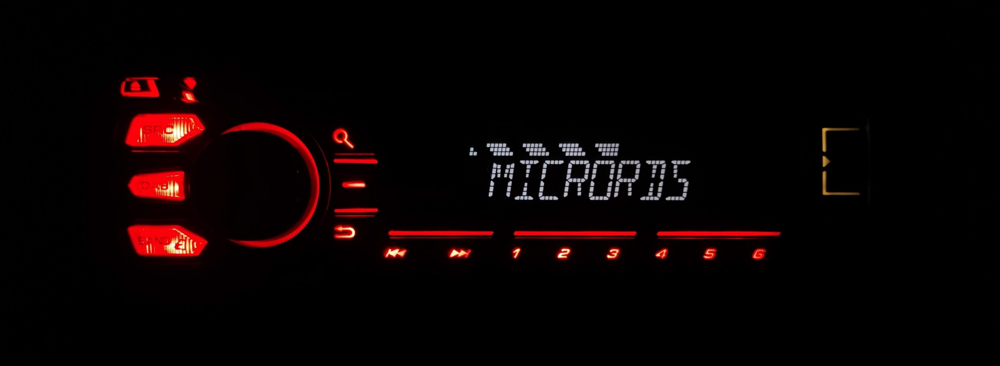

Features

- Lightweightness: Designed with efficiency in mind, NanoRDS boasts minimal resource requirements, ensuring optimal performance on a variety of hardware configurations.
- Extensive protocol support: Built-in compatibility for PS, PTY, PI, RT, RT+, CT, PTYN, ECC, LIC, AF.
- Seamless script usage: Flexibility of using familiar scripting languages like Bash, Python, and more, to effortlessly control RDS through FIFO.